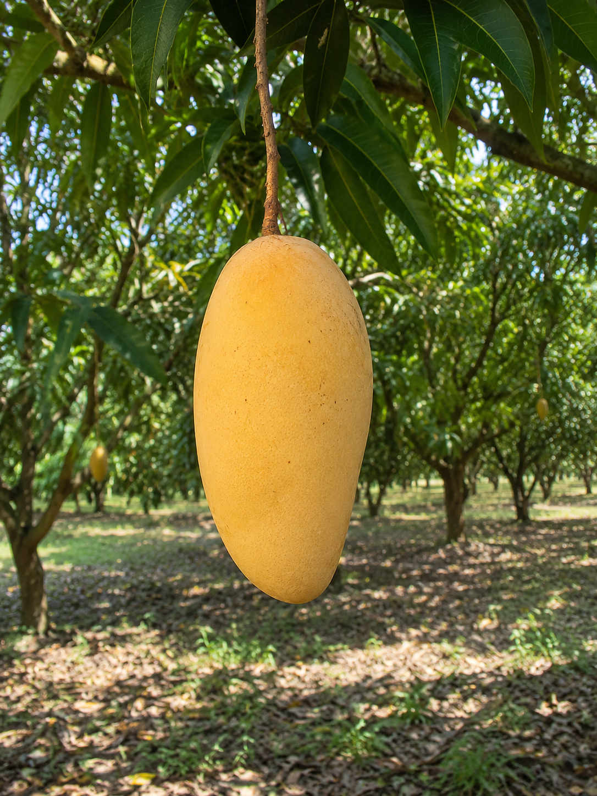
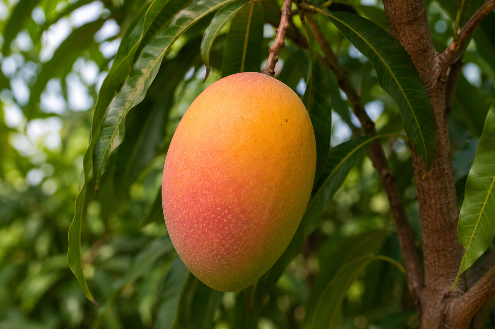
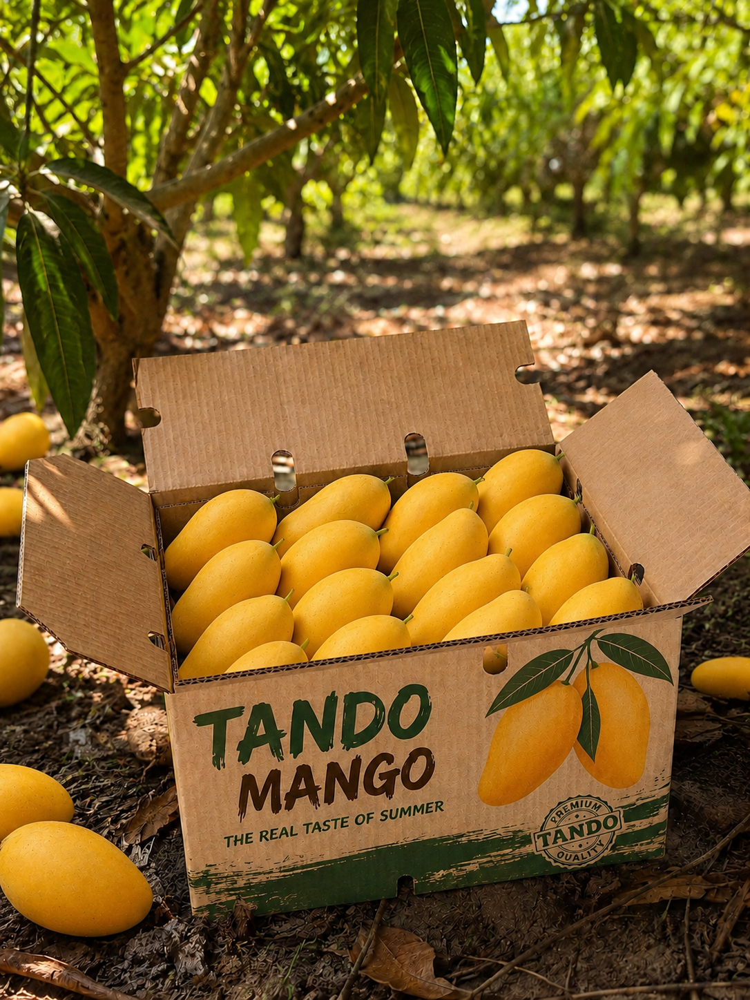

Bringing the Authentic Taste of Sindh to Your Table At Tando
Mango, we are more than just a
fruit provider; we are the bridge between the sun-drenched orchards of Sindh and mango lovers across Pakistan
. Our journey began with a simple mission: to deliver farm-fresh, naturally grown mangoes characterized by
their
rich taste and premium quality
. We believe that the "King of Fruits" deserves to be experienced in its purest form, which is why we
meticulously oversee every step of the process—from the first blossom in our Sindh orchards to the moment a
5kg
box arrives at your doorste


Our Philosophy: "Nature First" Our business philosophy is built
on the principle of patience
. In a world of fast-tracked food, Tando Mango stands for the integrity of natural growth. We strictly follow
a
no artificial ripening policy, allowing our fruit to mature on the branch to develop its signature,
room-filling
aroma and deep sweetness
. This commitment to natural cultivation is what gives our Sindhri, Chaunsa, and Anwar Ratol varieties their
world-class flavor profiles
. By prioritizing nature over speed, we ensure that every bite you take is packed with the nutrients and
sweetness that only time can provide.
Our Credentials & Quality Promise With years of experience in
the fertile lands of Sindh, we
have established ourselves as an authority in mango cultivation
. Our team follows a rigorous selection process, hand-picking only the most premium fruit for our 5kg
signature
boxes
. We understand that quality is in the details—the golden hue of a perfect Sindhri, the creamy texture of a
royal Chaunsa, and the intense fragrance of a small but mighty Anwar Ratol
. When you choose Tando Mango, you are choosing a brand that values transparency, sustainability, and
unmatched
customer satisfaction
